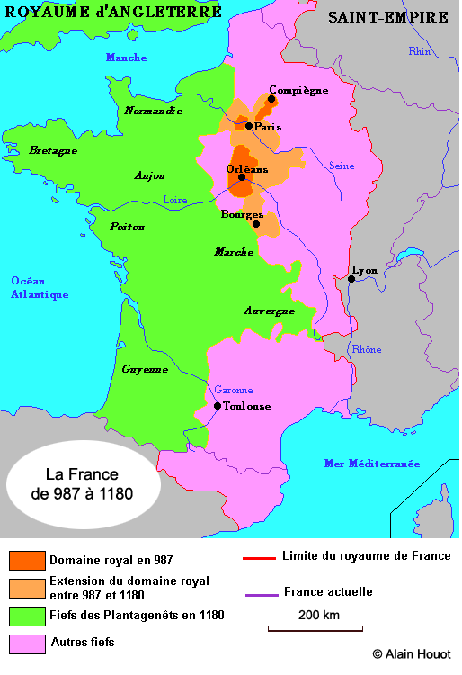
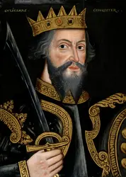

Après le traité de Verdun, les Carolingiens régnèrent sur la Francie occidentale, mais le pouvoir réel leur échappait de plus en plus, à mesure que de puissants seigneurs renforçaient le leur sur leurs fiefs. Les Robertiens, comtes de Paris disputèrent alors la couronne aux Carolingiens. Bientôt cette puissante famille allait obtenir le pouvoir royal et l’asseoir pendant près de 800 ans. Cette période est également marquée par l’essor du duché de Normandie, terre allouée aux envahisseurs Vikings. Les ducs de Normandie, de plus en plus puissants allaient conquérir la Grande Bretagne, provoquant un conflit quasi-permanent entre la France et l’Angleterre.
En France, les multiples invasions des Scandinaves et des Hongrois avaient considérablement affaibli le pays. La dévastation des régions les conduisit au repli sur soi-même. Le féodalisme provoqua une hiérarchie à plusieurs niveaux. Un seigneur assurait la sécurité de ses terres, ces terres étant divisées en fiefs attribuées à un vassal. Le féodalisme aboutit ainsi à une localisation importante si bien qu’il n’y avait plus vraiment de Nation, mais plutôt un magma de régions dirigées par des ducs ou comtes, vassaux du roi de France. Ces ducs avaient fait de leurs fiefs un héritage familial. En 954, Lothaire, fils de Louis IV devient roi de France. La mort en 956 de Hugues le Grand, le puissant comte de Paris, va favoriser le début de son règne. Mais le jeune Hugues Capet, fils de Hugues le Grand tient à garder ses avantages familiaux. Pourtant le conflit qui l’oppose à Lothaire paraît tourner en faveur du roi Carolingien. Mais Lothaire va s’embourber dans un conflit avec Otton, l’empereur de Germanie, à la fin de son règne le roi est très affaibli. Son fils, Louis V était déjà associé au trône aux cotés de son père. A la mort de Lothaire, Louis est donc déjà roi, mais sa situation est des plus précaires. Il doit faire face au duc des Francs, Hugues Capet, qui a l’appui de l’archevêque de Reims, Adalbéron. Le soutien de l’Eglise de Reims est important car c’est elle qui assure la légitimité du roi de France, la même qui a baptisé Clovis. Mais en 987, Louis V meurt subitement dans un accident de chasse, il n’a alors aucun héritier direct.
Ce n’est qu’au XIIe siècle, que Hugues fut surnommé Capet, sans doute parce que, comme ses ancêtres, il était abbé de Tours, où était conservé un fragment du manteau (capa) de Saint Martin. A cette époque on prit conscience du tournant politique de 987 avec l’émergence d’une nouvelle dynastie qui se perpétua jusqu’en 1792, et fut restaurée de 1815 à 1848. En 1792, lorsque Louis XVI fut jugé, il se fit appeler sous le sobriquet de Louis Capet, en référence au nom de son ancêtre.
Vue d'artiste du roi Hugues Capet. Huile sur toile de Charles de Steuben, 1837, Château de Versailles.
A la mort de Louis V, seul son oncle Charles, duc de Lorraine, réclamait le droit à la couronne en tant que descendant des Carolingiens. Mais Hugues Capet, alors comte de Paris, de Senlis, d’Orléans et de Dreux, joua alors de ses relations avec le puissant prélat Adalbéron. Il profita de cette circonstance pour se faire élire roi par une assemblée de seigneurs qui se laissèrent convaincre par l’archevêque par ces mots : « Nous n’ignorons pas, que Charles de Lorraine a des partisans : ils prétendent que le trône lui appartient par droit de naissance. Si l’on pose la question, nous répondrons que le trône ne s’acquiert pas par droit héréditaire. On ne doit y élever que celui qui se distingue non seulement par la noblesse corporelle, mais aussi par la sagesse qui trouve son appui naturel dans sa loyauté… » Ainsi, le 3 juillet 987, Hugues Capet est sacré roi en la cathédrale de Noyon par l’archevêque Adalbéron. Le jour de Noël de la même année, Hugues associe son fils Robert au gouvernement et le fait sacrer de son vivant. Conscient de la fragilité de son ascension, il s’assurait ainsi l’héritage du royaume à son fils. Procédé astucieux qui permit de substituer la monarchie élective souhaitée par les Grands et en vigueur sous les derniers Carolingiens, en une monarchie héréditaire, gage de la continuité. Les Capétiens régnèrent en France jusqu’en 1848, avec pour unique interruption, la Révolution Française et l’arrivée de Napoléon.
Comme les Carolingiens, les Capétiens utilisèrent le prestige religieux pour asseoir leur légitimité. Après Hugues Capet et jusqu’à Charles X, chaque roi eu à cœur de renouveler le rituel du sacre. A l’origine le sacre est une pratique germanique héritée des barbares. Le roi fait office d’intercesseur entre le monde divin et le monde humain. Pépin le Bref fut le premier à être ainsi sacré en confirmation de son accession à la royauté. Les Capétiens entretinrent une confusion entre le sacre germanique et le baptême de Clovis dans le souci d’enraciner leur légitimité au plus profond de l’Histoire. Deux reliques caractéristiques sont utilisées au cours du sacre des rois :
Hugues Capet couronné roi des Francs. Enluminure ornant un manuscrit du XIIIe ou XIVe siècle, Paris, BnF.
En cette fin du Xe siècle, le roi de France est un seigneur parmi tant d’autres. Il est même moins puissant et moins influent que la plupart de ses pairs. A la vérité, il n’est vraiment le maître que d’une région comprise ente Paris et Orléans. Mais à la différence des autres seigneurs qui l’ont élu, le nouveau roi a été sacré et personne ne doute qu’il ait été choisi par Dieu pour faire régner la paix dans le royaume. Le sacre de Hugues est un élément fondateur du royaume de France moderne. Le royaume de Hugues s’étend sur le bassin parisien, l’ancienne Neustrie mérovingienne. Les Capétiens vont en faire le noyau de la France actuelle. Le roi doit vite s’imposer sur son territoire face aux petits barons ou aux grands vassaux des comtés de Blois et d’Anjou. Sa légitimité est en effet bien fragile. Lorsqu’il s’oppose à son vassal Adalbert de Périgord, refusant de lever le siège de Tours, Hugues lui demande : « Qui t’as fait comte ? », et le vassal répliqua « Qui t’as fait roi ? ». Dans le même temps, Arnoul remplace son oncle Adalbéron, à l’évêché de Reims. Celui-ci étant un partisan du carolingien Charles de Lorraine, il devient alors urgent à Hugues Capet d’écarter ce dangereux prétendant. Grâce à une trahison organisée, Charles est finalement capturé, c’est la fin des prétentions carolingiennes. En 996, Hugues est à Saint-Martin de Tours lorsqu’il meurt de la variole. Il est inhumé à Saint-Denis.
La France des premiers rois capétiens.
Robert II est éduqué par le célèbre Gerbert d’Aurillac (qui deviendra pape sous le nom de Sylvestre II). Il a gardé de cette éducation une grande piété, d’où son surnom. Comme tous ses contemporains, il passa l’an 1000 sans s’en apercevoir. Il épouse Rozzala, la veuve du comte de Flandre, de 35 ans son aîné, mais celle-ci lui apporte une dot intéressante. Malgré sa piété, Robert est excommunié pour avoir répudié sa femme. Le règne de Robert est marqué par l’acquisition de la Bourgogne au terme de 12 ans de conflit. Le duché est donné à son fils Henri, qui sera peu après associé au trône comme l’avait fait Hugues Capet pour Robert. Les grands feudataires perdent ainsi leur droit d’élection. Mais la jeune dynastie reste sous la menace des Grands, le domaine capétien étant resserré autour d’un étau. En 1026, le fils de Robert, Henri est sacré roi à Reims. Désormais, pour consolider la position du fils aîné, il est décidé qu’à la mort de son père, il hériterait de la totalité du domaine royal et qu’il n’y aurait pas de partage entre lui et ses frères. La loi salique utilisé par les Mérovingiens et Carolingiens est ainsi oubliée, le partage du royaume entre les fils avait déjà provoqué la dislocation du royaume de Clovis et le démantèlement de l’empire de Charlemagne lors du traité de Verdun. Ainsi, à la mort de Robert II le Pieux, Henri Ier a une position plus solide au sein du royaume.
Robert II est le premier roi thaumaturge. Depuis, tous les rois Capétiens auront le don de guérir les écrouelles (tuberculose ganglionnaire). Ainsi, après qu’un roi avait touché un malade, une guérison spontanée pouvait être liée au geste royal considéré comme une intervention divine.
Robert II (Le Pieux).
Henri est le second fils de Robert II le Pieux, il est associé au trône lorsque son frère aîné meurt en 1026. Devenu roi, Henri épouse la fille de l’empereur d’Allemagne qui décédera l’année suivante. Henri épouse donc en secondes noces Anne de Kiev. Leur fils, Philippe sera le futur roi, dès l’âge de sept ans, il est associé au trône. La situation d’Henri est assez délicate, sa mère, Constance souhaite voir son troisième fils sur le trône. Elle trouve l’appui de plusieurs feudataires notamment de Eudes II de Blois. Henri est contraint de se réfugier chez le duc de Normandie, Robert le Diable. Il a néanmoins de nombreux alliés : le comte de Flandres, le comte d’Anjou et l’empereur d’Allemagne, Conrad. Il rétablit la situation en attribuant la Bourgogne (qu’il avait reçu par son père) à son demi-frère. Ce sont les différentes querelles entres les seigneurs qui va permettre la sécurité du roi. En 1047, Henri gagne la bataille de Vals les Dunes contre les barons normands qui s’opposait au jeune duc Guillaume. Mais bientôt, le roi doit renverser son alliance, le duc normand étant devenu trop puissant. Mais Guillaume de Normandie remporte une victoire contre le roi et ses alliés. Henri Ier meurt en 1060, son fils Philippe Ier lui succède alors.
Après le traité de Saint-Clair sur Epte en 911, la Normandie (terre des Normands) est attribuée à Rollon, un chef viking. Le roi Charles II s’assurait alors de la paix avec les envahisseurs scandinaves. Les Normands s’étaient convertis et ils étaient désormais des vassaux du roi de France. Les successeurs de Rollon prirent le titre de comtes de Normandie jusqu’à Richard II où ils devinrent des ducs. La Normandie n’échappa pas au processus d’émancipation des princes territoriaux. Les ducs rendent la justice, frappent leur monnaie, lèvent l’impôt… Mais à la différence des autres princes territoriaux, les ducs normands évitent de laisser des pouvoirs trop importants à leurs vassaux. Le duché est l’un des plus grands et des plus riches du royaume. L’aristocratie franque se mélangeait à une partie d’hommes d’origine scandinave. Le duché s’agrandit au fil des années notamment grâce à Guillaume Longue Epée, fils de Rollon. En 1028, Robert le Magnifique (ou le Diable) devient duc à la mort de son frère. Celui-ci aide le roi Henri Ier à lutter contre sa mère et ses frères rebelles. Il meurt subitement à Nicée au retour d’un pèlerinage à Jérusalem.
Portrait de Guillaume le Conquérant, artiste inconnu, huile sur panneau, 1597-1618. • © National Portrait Gallery, London.
Avant de partir pour Jérusalem, Robert le Diable désigna l’un de ses fils, Guillaume pour lui succéder. La tradition normande voulait qu’un homme ait plusieurs épouses et qu’il puisse choisir l’un de ses fils pour l’hériter. Arlette, la mère de Guillaume était la fille d’un tanneur, son origine modeste fit valoir à Guillaume le surnom de « Bâtard ». Durant la minorité de Guillaume, les désordres se multiplièrent en Normandie. Guillaume était encore jeune et très souvent livré à lui-même face aux barons normands qui essayaient de s’emparer du pouvoir. Avec l’aide du roi Henri Ier, il mata la révolte des barons à Vals les Dunes. En 1050, il épouse sa cousine Mathilde de Flandres, contrairement à son père, il restera monogame et fidèle à son épouse. Les années suivantes sont marquées par des conflits féodaux, Guillaume se révélant un formidable homme de guerre. Il bat même les troupes royales d’Henri Ier. En 1066, Guillaume de Normandie est devenu l’un des plus puissants hommes du royaume. Il fonde la ville de Caen, en bâtissant son château et deux abbayes (l’Abbaye aux hommes dédiée à Saint Étienne et l’Abbaye aux dames dédiée à la sainte Trinité).
En 1066, le roi d’Angleterre, Édouard le Confesseur meurt sans héritier. Le demi-frère d’Edouard, Harold monte sur le trône oubliant une promesse faite quelques années plus tôt qui faisait de Guillaume le successeur de son cousin Edouard. Guillaume prépare alors l’invasion de l’Angleterre. Il obtient d’abord l’excommunication d’Harold par le pape, car il avait reconnu le choix d’Edouard sur des reliques sacrées. Sous l’étendard papale, Guillaume préparait alors l’attaque de l’Angleterre. Des chevaliers de toute la France se joignirent à lui. Après avoir traversé la Manche, il débarque dans le Wessex. Le choc des armées a lieu à Hastings. Victorieux, Guillaume le Conquérant se fait sacrer roi d’Angleterre, le jour de Noël 1066. Cette date est fondamentale dans la monarchie anglaise. C’est la fin de la domination saxonne sur l’île. La conquête d’Angleterre est racontée par la tapisserie de Bayeux, l’un des chefs d’œuvre artistique du Moyen Âge (70 mètres de long). L’origine de la tapisserie reste énigmatique, la légende l’attribue à la reine Mathilde. Devenu roi, Guillaume accomplit une œuvre immense, construisant de nombreux monuments, notamment la Tour de Londres. En 1085, il commanda ce qu’on peut appeler un recensement au sens moderne, le « Livre du Jugement Dernier » ou Domesday’s Book, qui faisait l’inventaire des hommes et richesses du royaume. Guillaume reste cependant le vassal du faible roi de France. Et cela va causer de véritables conflits entre les deux pays en raison des possessions anglaises sur le territoire français. Les Normands se sont également établis en Sicile, où Robert Guiscard s’établit en 1059, délivrant le pape assiégé à Rome. Plusieurs dynasties normandes se sont ainsi installées en Europe. En Angleterre, le français est la langue de la Cour, l’anglais est en fait un amalgame entre le saxon et le français qui représente environ 60% de son vocabulaire.
Le 14 octobre 1066, les troupes normandes et saxonnes s’affrontent à Hastings. On compte environ 7 000 hommes dans chaque camp. L’armée saxonne est très disparate et essentiellement constituée d’hommes à pied qui ont pour seule consigne de « bombarder l’ennemi avec tous les projectiles possibles. » La ligne de front est protégée par une ceinture de boucliers. En face, l’armée de Guillaume paraît mieux organisée. Elle est constituée de normands, bretons, flamands, français… Une première ligne d’archers est chargée d’harceler l’ennemi tandis qu’une ligne de fantassin prend le relais. Les chevaliers suivent… Suivant le plan de Guillaume, les archers décochent leurs flèches sur les lignes adverses. Mais la chevalerie normande s’éparpille dans les marécages, c’est la déroute. Le bruit circule que le duc de Normandie a été tué. La panique gagne les rangs, les Anglais se lancent à la poursuite des fuyards. Guillaume ôte son casque et parcourt ses lignes afin que ses soldats le reconnaissent. Mais les défenses anglaises tiennent bon. C’est alors qu’il ordonne un simulacre de retraite. Un trait de génie ! Il attire ainsi les Anglais désorganisés et sans discipline pour mieux les occire. La bataille se prolongea l’après-midi. Harold meurt après avoir reçu une flèche dans l’œil. A la nuit, Guillaume avait gagné la bataille d’Hastings, ainsi que le trône de l’Angleterre. La bannière papale arborée durant la bataille confère à l’expédition le statut d’une véritable croisade contre le roi saxon. Transformant le pays en l’un des plus puissants d’Europe, les Normands ont importé l’arc long, qui fait sa première apparition à Hastings. Arme de prédilection des Anglais, ravageuse lors de la guerre de Cent Ans.
Scène représentant l'évêque Odon de Bayeux tenant un bâton de commandement (baculum), signe d'autorité, lors de la bataille d'Hastings et encourageant les combattants.
A la mort du roi Henri Ier, son fils Philippe est encore bien jeune pour régner. C’est son oncle, le comte de Flandre, Baudouin V (père de Mathilde, épouse de Guillaume le Conquérant) qui assure la régence. Philippe doit rapidement s’opposer à la puissance de Guillaume le Conquérant, devenu roi d’Angleterre en 1066. Ne pouvant le vaincre directement, Philippe joue alors de la diplomatie, en soulevant les fils du roi anglais contre leur père. Après l’avoir chassé de Bretagne, il soutient Robert Courteheuse, le fils de Guillaume qui a hérité du duché de Normandie. Pour récompense, Robert Courteheuse lui offre Gisors. Guillaume le Conquérant meurt en 1087, son autre fils Guillaume le Roux lui succède alors. Philippe continue alors de soutenir Robert contre son frère, il a l’intention de dissocier la Normandie de l’Angleterre. Guillaume le Roux projette l’invasion du territoire royal, c’est le fils de Philippe, Louis qui parvient à le chasser du royaume. En 1095, le pape Urbain II lance la Première Croisade, mais Philippe est écarté de l’expédition pour avoir répudié sa femme, contre la loi de l’Église. Philippe Ier a contribué à élargir le domaine royal en obtenant notamment le Vermandois, le Vexin français et le Gatinais. Mais la situation du capétien reste sous la menace des grands seigneurs du royaume, certains n’hésitent pas à piller le domaine royal. Vers la fin de son règne, Philippe laisse son fils Louis gouverner le pays. Il meurt en 1108, après un long règne de près de 50 ans.
Après la mort de Philippe Ier, la transmission de la couronne au fils aîné du roi défunt semblait être acceptée par tous les Grands du royaume. Louis VI, comme son surnom l’indique, était assurément un homme gros, mais sa corpulence ne l’empêchait pas de mener la vie active à laquelle son titre de roi le condamnait. Suger, le grand conseiller de la couronne, nous a laissé ce portrait saisissant du souverain : « Placé entre les corps de bataille ennemis, l’épée à la main… il combattait corps à corps, faisant l’office d’un simple chevalier, non d’un roi. » Et c’est bien ainsi qu’il faut imaginer le roi de France au début du XIIe siècle, payant de sa personne, et, si les circonstances l’exigeaient, rougissant son épée du sang de ses ennemis. Louis le Gros défendit d’abord le royaume contre les entreprises étrangères : celle d’Henri Ier, roi d’Angleterre, et duc de Normandie. La guerre, qui tournait à l’avantage d’Henri (victoire de Brémule en 1119) s’interrompit après la disparition des héritiers du roi anglais lors d’un naufrage dans la Manche. Henri Ier entraîna alors son gendre Henri V contre la France, l’empereur allemand qui tenta sans succès, en 1124, d’envahir la Champagne. Mais Louis passa le plus clair de son temps à affermir son autorité à l’intérieur même du domaine royal : contre les barons pillards qui menaçaient la sécurité des gens d’Église et celle des marchands, ou contre ses vassaux indociles ou félons (traîtres), il porta la guerre, chevauchant sans cesse et livrant bataille sur bataille. Louis aura agrandi son domaine de l’Auvergne, du Poitou, du Limousin, du Périgord, du Bordelais, de l’Agenais et de la Gascogne. Le royaume de France commençait à prendre forme.
Le premier texte faisant référence au mot France remonte à 1119. Sur une lettre adressée au pape Calixte II, Louis VI se déclare roi de France, non plus des Francs, et fils particulier de l’Église romaine.
Couronnement de Louis VI le Gros. Henri Ier Beauclerc et les envoyés français Grandes Chroniques de France, enluminées par Jean Fouquet, Tours, vers 1455-1460.